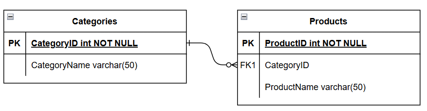

toovad esile konkreetsete mõistete või olemite (st objektid, inimesed, kohad jne)
omavahelised seosed antud teemavaldkonnas.
ER diagramme kasutatakse kõige sagedamini relatsiooniandmebaaside kujundamiseks või
silumiseks tarkvaratehnika, äriinfosüsteemide, hariduse ja teadustöö valdkondades.
Erinevad ühenduselemendid:

Erinevate võtmete tähendused:
Primaarvõti on unikaalne võti, mille andmebaasi kujundaja valib ja mida kasutatakse kogu
olemikomplekti tuvastamise mehhanismina. See peab tabelis kordumatult identifitseerima ja
ei tohi olla null. Primaarvõti näidatakse ER mudelis atribuudi allajoonimisega.
Composite key koosneb kahest või enamast atribuudist.
Foreign key (FK) on tabeli atribuut, mis viitab primaarvõtmele teises tabelis või
see võib olla null. Nii võõr- kui ka primaarvõti peavad olema sama tüüpi.
Keys (Võtmed) on üks viis atribuutide kategoriseerimiseks.
ER diagrammid aitavad kasutajatel oma andmebaase modelleerida, kasutades erinevaid tabeleid,
mis tagavad andmebaasi korrastatuse, tõhususe ja kiiruse. Võtmeid kasutatakse erinevate
andmebaasi tabelite omavaheliseks linkimiseks võimalikult tõhusal viisil.
ERD näide:

allikad: Drawio Lucidchart Lucidchart Saylor Academy